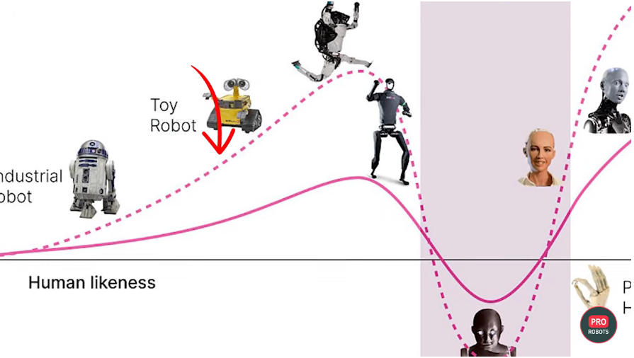

Prueba, mira y explora la IA.
Empieza con un ejemplo breve. Disfruta de algo sorprendente, haz una pregunta y detente cuando quieras. El material más avanzado estará aquí cuando lo necesites.
Empieza con algo pequeño · Relaciónalo con el trabajo · Profundiza
1. Empieza con algo pequeño
No necesitas conocimientos técnicos. Elige uno de estos ejemplos breves.
¿Listo para probar? Haz tu primera pregunta a la IA. Para recordar los pasos, usa la guía de preguntas de una página.
Mira algo sorprendente
Elige una demostración breve. No necesitas entender la ingeniería para disfrutarla. Estos videos se abren en YouTube.
Después de verlo, pregunta a la IA: «¿Cómo mantiene el equilibrio un robot? Explícalo con un ejemplo cotidiano, sin ecuaciones».
Una demostración muestra una actuación seleccionada. No indica con qué fiabilidad trabaja un robot durante todo el día ni qué movimientos usan IA.
¿Cómo hacen bailar a los robots?
Boston Dynamics explica que el baile de Spot fue cuidadosamente coreografiado y programado. Los robots seguían tiempos sincronizados, no escuchaban la música. La creatividad humana y la ingeniería hicieron posible la actuación.
2. Relaciónalo con el trabajo real
Un poco más para reflexionar. Elige un ejemplo y pregunta qué siguen necesitando hacer las personas.
Más práctica cuando quieras
- Ejercicios breves con IA — elige una tarea.
- Practiquen juntos — una actividad familiar a partir de los 10 años.
- Tareas de oficina — explora otro tipo de trabajo.
Guarda un ejemplo útil
Guarda una pregunta, su respuesta y lo que comprobaste en un documento o carpeta. Basta una nota breve sobre lo aprendido.
3. Profundiza, si quieres
¿Listo para ejercitar la mente? Estos dos canales tienen la clasificación Dificultad alta en esta página. Son opcionales; no son la siguiente lección obligatoria.
Elige un video reciente sobre un tema que te interese. Revisa la fecha de publicación. Puedes centrarte en la conclusión —qué cambió y por qué podría importar— sin seguir cada detalle técnico.
Los canales pueden incluir opiniones, promociones y productos de pago. Una presentación segura invita a investigar, pero no demuestra que una herramienta te vaya a funcionar.
La visión actual de un fabricante de robots industriales
Boston Dynamics: Atlas, de la investigación al trabajo industrial — incluye la actualización de 2026 y logros anteriores. Pregunta qué se demuestra, qué afirma la empresa y qué sigue siendo un plan.
Experimenta en una computadora de pruebas
Una computadora de pruebas es un equipo adicional que puedes restablecer. Te da espacio para experimentar con programas o un sistema operativo mientras conservas el trabajo diario en tu computadora principal.
Usa datos inventados y copias, respalda los archivos importantes en otro lugar y entiende cómo restablecer el equipo antes de cambiarlo. Una computadora adicional también puede perder archivos o exponer cuentas; no queda aislada ni protegida automáticamente. Comprueba qué hacen los comandos y permisos antes de aceptarlos.
Aprende sobre computadoras de pruebas y Lubuntu para equipos antiguos. Mirar videos o hacer preguntas comunes a la IA no requiere otra computadora.
Opcional: crea tu propia pregunta de práctica
¿Quieres ayuda para empezar una pregunta?
Copia este texto y pégalo antes de tu pregunta en un chat de IA. Le pide que explique paso a paso y te ayude a continuar la conversación.
Crea una solicitud para practicar
Usa esta herramienta opcional para crear instrucciones para un chatbot. También puedes omitirla y probar una de las actividades anteriores.
No escribas contraseñas, datos privados ni información que no quieras compartir con el servicio de IA que uses.
Consejo: En un teléfono, toca Compartir solicitud. En una computadora, usa Copiar solicitud y pega el texto en tu chatbot.
¿Por qué pueden inquietarnos los robots casi humanos?
El «valle inquietante» describe la incomodidad que algunas personas sienten ante robots o personajes animados casi humanos. Puedes preferir una forma de máquina práctica; un robot no necesita cara humana para ser útil.

La imagen original contiene texto en inglés. El contenido principal de esta página está traducido al español.
¿Quieres un curso más largo?
Explora recursos gratuitos de aprendizaje en línea. Revisa las condiciones actuales del proveedor antes de inscribirte.
Selección revisada el 4 de octubre de 2026. El baile es un ejemplo educativo con fecha; los canales llevan a colecciones que cambian, no a un video que se prometa como el más reciente.
Los enlaces externos pueden abrir contenido en inglés. Revisa las opciones de idioma del servicio.